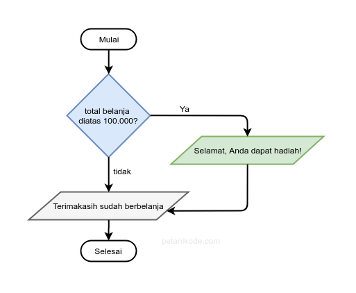
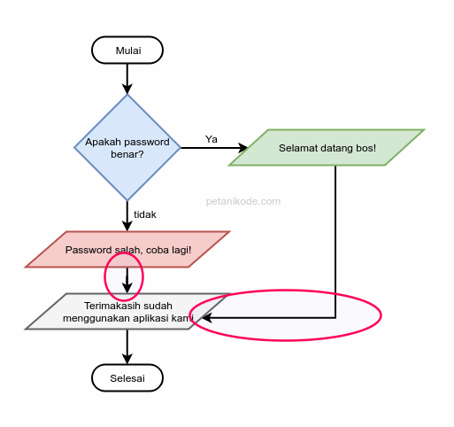

Condition/Percabangan
Pada pemograman JavaScript, ada 2 jenis dari condition, yaitu :
If Else
Ada 3 bentuk dari if else statement, yaitu :
If Statement
Percabangan if merupakan percabangan yang hanya memiliki satu blok pilihan saat kondisi bernilai benar.

Terdapat dua cara dalam penulisan if statement, yaitu :
let belanja = 10000
if(belanja === 10000){
console.log("Selamat Anda mendapatkan hadiah")
}
let belanja = 10000
if(belanja === 10000)
console.log("Selamat Anda mendapatkan hadiah")
If ... Else Statement
Percabangan if/else merupakan percabangan yang memiliki dua blok pilihan. Pilihan pertama untuk kondisi benar, dan pilihan kedua untuk kondisi salah (else).

Jika kondisi if(...) nilainya true, maka kode di dalam body if akan dieksekusi. Kode di dalam body else akan dilewati dan tidak dieksekusi.
Jika kondisi if(...) nilainya false, maka kode di dalam body else akan dieksekusi. Kode di dalam body if akan dilewati dan tidak dieksekusi.
let password = "UniversitasMetamedia"
if(password==="KhatibSulaiman"){
console.log("Selamat Datang")
}else{
console.log("Passwod salah, coba lagi")
}
If ... Else If Statement
Percabangan if/else if merupakan percabangan yang memiliki lebih dari dua blok pilihan, dimana pilihan kedua dan seterusnya menggunakan else if dan ditutup dengan else.

Jika condition1 nilainya true, blok kode 1 akan dieksekusi. Jika condition1 nilainya false, maka statement else if condition2 akan dieksekusi. Jika condition2 nilainya true, blok kode 2 akan dieksekusi. Jika condition2 nilainya false, blok kode 3 akan dieksekusi
let nilai = 85
if(nilai >= 90){
console.log("Nilai A")
}else if(nilai >= 80){
console.log("Nilai B")
}else if(nilai >= 70){
console.log("Nilai C")
}else{
console.log("Nilai D")
}
Switch Case Statement
Switch adalah perintah yang digunakan untuk memeriksa nilai dari suatu variabel dan menjalankan kode tertentu berdasarkan nilai tersebut. Fungsinya mirip dengan if...else, tapi lebih rapi dan mudah dibaca kalau ada banyak kondisi.
switch(variabel){
case value:
// blok kode
break;
case value2:
// blok kode
break;
default:
// blok kode
}
Dimana :
Contoh sederhana dari switch case :
let nilai = 85;
switch(true){
case (nilai >= 90):
console.log("A");
break;case (nilai >= 80):
console.log("B");
break;
case (nilai >= 70):
console.log("C");
break;
default:
console.log("D");
}
Perbedaan If Else dan Switch Case
Berikut tabel perbedaan if else dan switch case
| Perbedaan | If Else | Switch Case |
|---|---|---|
| Cocok Untuk | Mengecek kondisi kompleks dengan operator logika (>,<,&&) | - |
| Pengurangan | - | console.log(`${c} - ${b}`) |
| Cara Kerja | Mengecek kondisi satu per satu dari atas ke bawah | Membandingkan nilai dengan daftar case yang ada |
| Tipe Data | Bisa untuk perbandingan angka, string, boolean, dll | Biasanya untuk perbandingan nilai tetap (angka, string) |
| Kinerja | Bisa lambat jika memiliki banyak kondisi | Lebih cepat jika memiliki banyak kondisi |
| Sintaks | Lebih fleksibel karena bisa menggunakan operasi logika | Lebih rapi jika nilai tetap dan banyak pilihan |
| Default behavior | Jika kondisi cocok maka proses akan langsung berhenti | Harus menggunakan break untuk menghentikan proses agar tidak lanjut ke case lain |
Default behavior : Perilaku bawaan atau tindakan otomatis yang akan terjadi jika tidak ada kondisi yang cocok atau terpenuhi.
Kapan Pakai If Else atau Switch Case?
If Else
Switch Case
Ternary Condition
Ternary Condition merupakan percabangan yang menggunakan operator ternary (?) untuk menentukan nilai variabel berdasarkan kondisi percabangan.
Format dari ternary condition yaitu :
kondisi ? jikaTrue : jikaFalse;
Ternary Condition merupakan bentuk lain dari if ... else dengan sintaks yang lebih singkat.
Contoh sederhana dari ternary condition yaitu :
let angka = 15;
let pesan = angka > 10 ? "Lebih besar dari 10" : "Tidak lebih besar dari 10";
console.log(pesan);